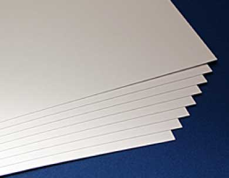
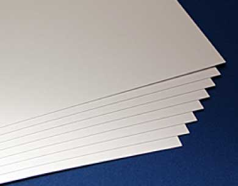

Мягкая упаковка — новый тренд 21 века. Универсальная комбинация свойств материала (термо- и влагозащита, вакуумное и газовое наполнение, специфические барьерные свойства) с невероятными возможностями печати и относительно невысокой стоимостью выводит мягкую упаковку на лидирующие позиции в мире. Актуальный в наше время вопрос экологичности и безвредности для окружающей среды может быть решен с помощью использования разлагающихся полимеров, сокращающих срок переработки мягкой упаковки в десятки раз. Правильный выбор материала (PE, PP, BOPP, PET, Био) и способа печати (флексографическая или ротационная печать) поможет оптимально сконфигурировать конструкцию упаковки, способы изготовления и минимальный стартовый тираж.
 

Широкий ассортимент мелованных и немелованных картонов от разных производителей со всего мира позволяет подобрать наиболее подходящий по цене и соответствию назначению вариант. При необходимости достичь суперплотности и жёсткости коробки можно пользоваться конструкторскими приёмами (усиленные рёбра жёсткости, ложементы, пояски) или идти путём увеличения жесткости материала с помощью каширования — приклеивания картонного листа с запечатанным изображением (лайнера) на гофрокартонную основу (от целлюлозного картона до гофрированного картона толщиной 8 мм).
Этикетки на бумажной основе — идеальный выбор для маркировки продукции, которая не подвергается сильному воздействию таких факторов, как температура и влажность. Низкая себестоимость позволяет использовать их там, где одним из основных условий является короткий жизненный цикл этикетки. В основном бумажные этикетки применяются для печати ценников, наклеек с отметками о весе товара и другой оперативной информации. Для создания бумажных этикеток используется широкий спектр мелованных и немелованных бумаг разной толщины.
Полимерные (полиэтиленовые и полипропиленовые) этикетки не боятся влажности и низкой температуры, поэтому целесообразно использовать их для этикетирования продукции, хранящейся в охлажденном или замороженном виде. Прозрачная основа полимерных этикеток позволяет создавать «окна», через которые видна находящаяся внутри упаковки продукция. Инновационные материалы (например, серия Evolution от Ritrama) предназначены для создания сложных многослойных этикеток для косметической продукции и средств личной гигиены.
Для маркировки пищевых продуктов в розничной торговле широко используются этикетки, предназначенные для прямой термопечати. Мы производим термоэтикетки из нескольких видов материалов:
— экономичных материалов серии Eco, предназначенных для краткосрочных этикеток;
— стойких к внешнему воздействию материалов серии Top;
— ламинированных и полипропиленовых пленок различной толщины.
Краски, которыми изображение наносится на термоэтикетки, не препятствуют нанесению информации на термопринтерах.